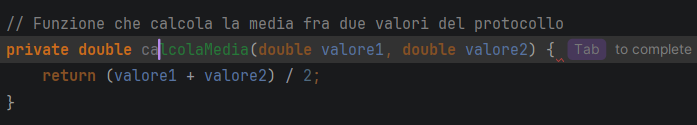
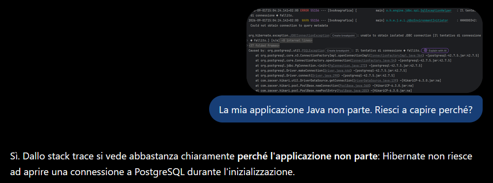
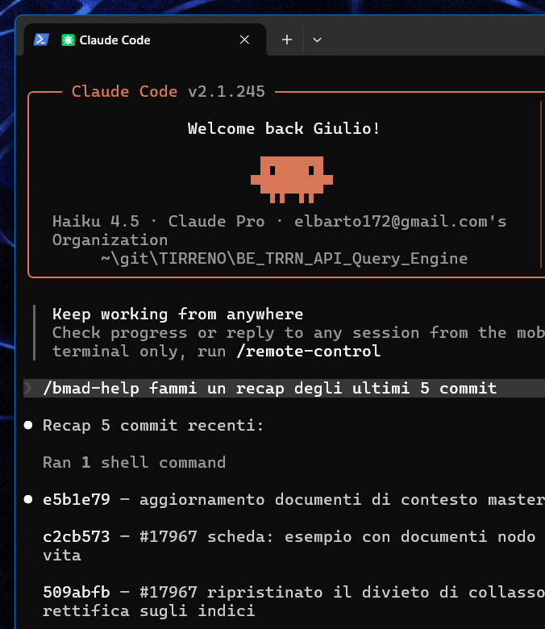
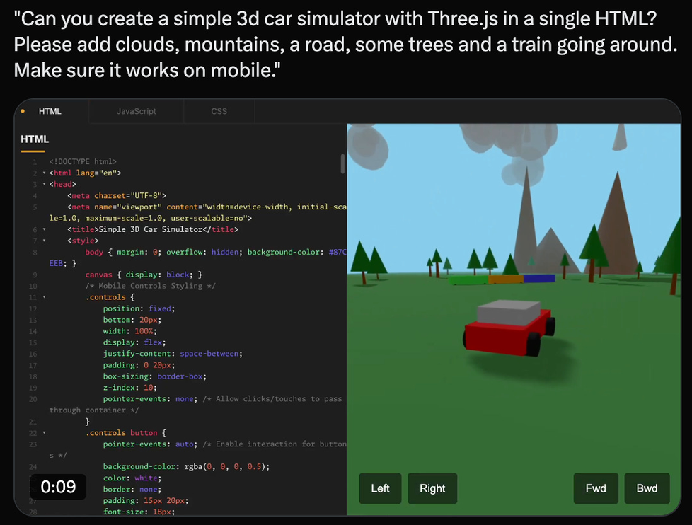
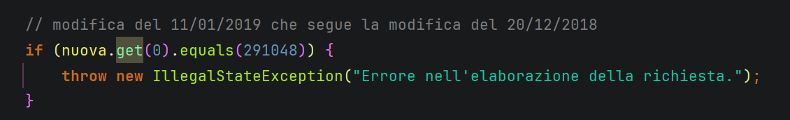
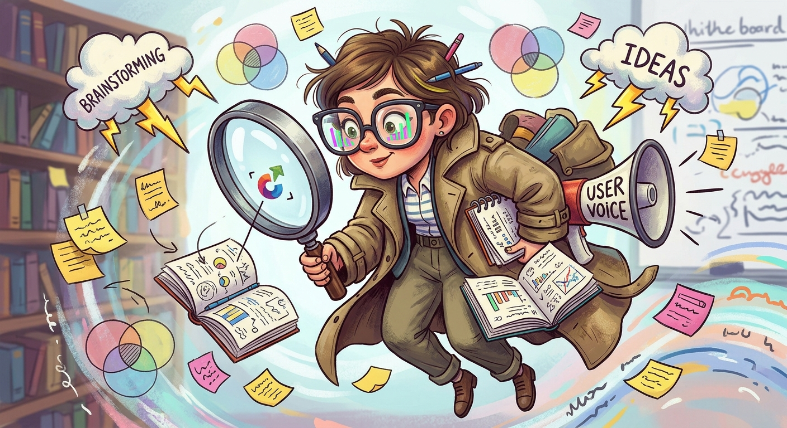
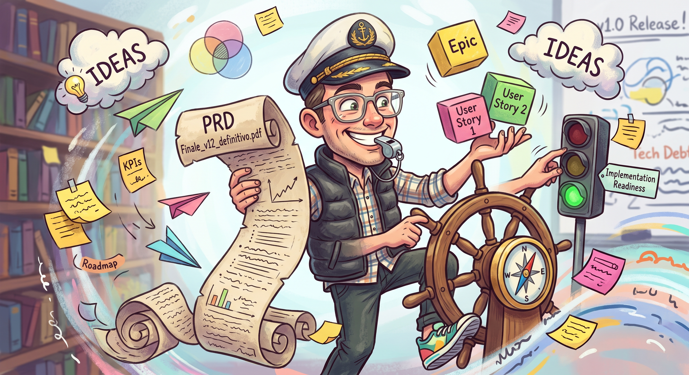
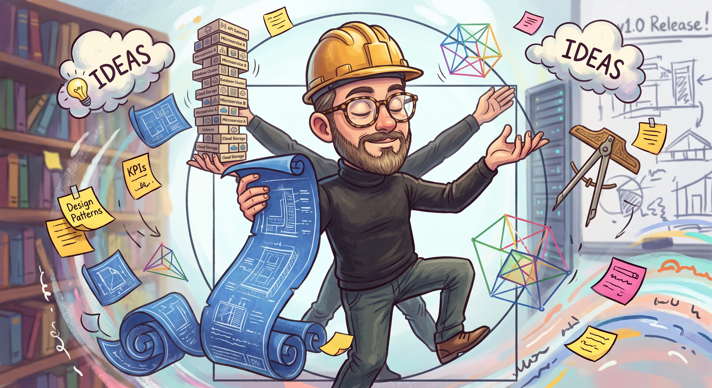
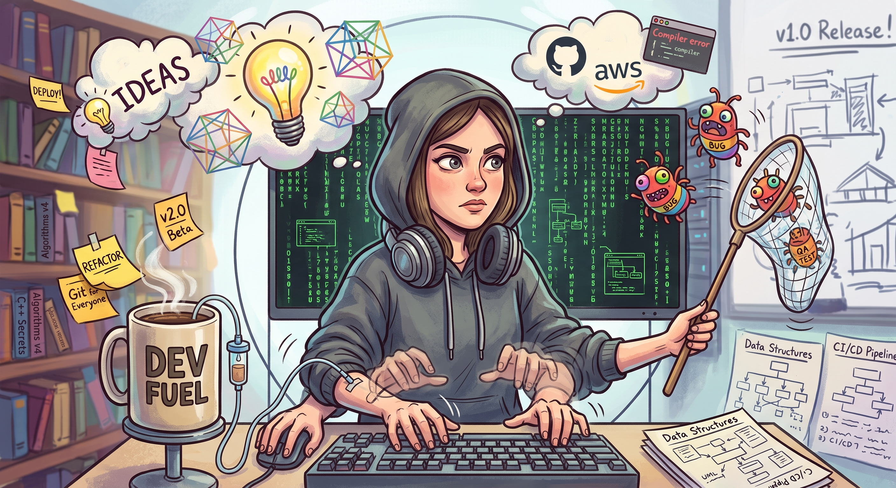

Un approccio strutturato all’utilizzo dell’AI nello sviluppo software
Giulio Smedile · 8 settembre 2026
La mappa
Cinque blocchi, un’ora
01Overview dei tool
02Vibe coding e debito cognitivo
03BMAD: dare struttura al processo
04Trasferire conoscenza agli agenti
05Chiusura e domande
Alzata di mano
Chi ha scritto codice così, nell’ultimo anno?
Senza nome — Blocco note− □ ×
FileModificaFormatoVisualizza?
export async function getUserOrders(userId: string) {
const user = await db.users.findById(userId);
if (!user) throw new NotFoundError("utente non trovato");
const orders = await db.orders.findMany({ userId });
return orders.filter(o => o.status !== "cancelled");
}
Stessa identica funzione
E chi l’ha scritta così?
orders.service.tsorders.repo.tsorders.test.ts
1export async functiongetUserOrders(userId:string) {2constuser=awaitdb.users.findById(userId);3if(!user)throw newNotFoundError("utente non trovato");4constorders=awaitdb.orders.findMany({userId});5returnorders.filter(o=>o.status!=="cancelled");6}
Con il blocco note si può. È solo parecchio farraginoso. Nessuno dei due strumenti scrive il codice al posto tuo: cambia l’attrito.
Perché ne parliamo adesso
Non é «il futuro». È già il presente.
90%
degli sviluppatori usa strumenti di AI generativa ogni settimana nel proprio lavoro
Luglio 2026 - JetBrains Developer Ecosystem Survey 2026
Adozione altissima, processo quasi zero. È questo scarto il tema dell’ora che segue.
Tassonomia
Tre generazioni, tre modelli mentali
Non sono la stessa cosa con nomi diversi. Cambia chi decide cosa fare.
Autocomplete
decidi tu

Chat
chiedi tu

Agenti
dichiari l’obiettivo

controllo tuoautonomia dello strumento
Il salto
Una modifica, oppure quindici
Chat — una richiesta
prompt diff
Una superficie sola da rivedere. Se sbaglia, te ne accorgi subito.
Agente — un obiettivo
obiettivo
├── legge 8 file del modulo
├── modifica orders.service.ts
├── lancia i test ✗ 2 falliti
├── modifica orders.repo.ts
├── aggiunge una migrazione
├── rilancia i test ✓
├── rinomina un campo in 4 file
├── aggiorna le fixture
├── aggiorna il changelog
└── apre la pull request
Quindici azioni, gran parte mai passate sotto i tuoi occhi.
Definizione
Descrivi l’intento. Accetti l’output. Non leggi il codice.

Il termine nasce da un post di Andrej Karpathy nel febbraio 2025. Non è pigrizia: è una risposta razionale a uno strumento che, il più delle volte, funziona.
Prima delle critiche
E funziona davvero
Velocità sul prototipo
Da idea a cosa che gira in pochi minuti. Per validare un’ipotesi è imbattibile: il codice è usa-e-getta per definizione.
Sblocca la pagina bianca
Il costo di partire crolla. Avere qualcosa di sbagliato da correggere è quasi sempre meglio di un file vuoto da riempire.
Terreni che non conosci
Linguaggio nuovo, framework mai visto, script di sistema. Ti porta al risultato senza tre giorni di documentazione.
La definizione centrale
Il debito cognitivo
Debito tecnico
Nel codice
Scorciatoie che qualcuno dovrà ripagare. Lo vedi nel diff, lo misuri, lo metti a backlog.
visibile
Debito cognitivo
Nella testa
La perdita progressiva di comprensione del tuo stesso codebase. Non compare in nessun diff.
invisibile
E non lo intercetti in code review — perché la review la stai facendo tu, che quel codice non l’hai capito.
Il meccanismo
Non è un evento. È una deriva.
01Accetti una modifica che non hai letto.
02Il contesto successivo si appoggia su quella modifica.
03Il divario fra ciò che c’è e ciò che sai cresce.
04Chiedere all’AI di spiegartelo diventa più veloce che leggerlo.
05Territorio sconosciuto che possiedi formalmente, e di cui sei responsabile.
Ogni passo abilita il successivo. Nessuno dei cinque, preso da solo, sembra un errore.
Il salto di contesto
In azienda è un problema diverso

Su un progetto personale il debito cognitivo lo paghi tu. Qui lo paga qualcun altro.
In review dal PM
Quando il servizio è giù
Il collega - o l'agente - nuovo
Riformuliamo
Non «AI sì o AI no». AI con quale processo?
Nessuno vuole rinunciare alla velocità. Ma la velocità senza comprensione non è sostenibile. Serve un processo che tenga l’umano nel punto giusto del ciclo: non ovunque, o torniamo a prima; non da nessuna parte, o è vibe coding.
Fra una sessione e l’altra
La memoria non può vivere nella chat. Chiudi la finestra e se n’è andata: domani rispieghi tutto.
Fra le persone del team
Se quella regola la sai solo tu, l’agente del tuo collega non la sa. E scriverà codice che non passa la tua review.
Versionata e mutabile
Le decisioni cambiano. La memoria dev’essere un artefatto di progetto: correggibile, e la correzione passa in review.
Il puntoLe decisioni prese in pausa caffè, per mail o in riunione non esistono — né per l’agente, né per chi arriva fra sei mesi — finché qualcuno non le scrive nel repository.
Il framework in una slide
BMAD non aggiunge intelligenza all’AI. Aggiunge struttura al processo.
Divide un compito grande in ruoli con responsabilità definite, e fa passare da uno all’altro artefatti scritti. Quello che ottieni non è un modello più bravo: è un lavoro che si può seguire, interrompere e correggere.
Prima degli identikit
Non sono tool. Sono persone a tua disposizione.
Ogni agente BMAD ha un nome, un ruolo e dei principi: non un comando da imparare a memoria. Parli con Mary come parleresti con un’analista, non con un flag da riga di comando — ed è proprio questo a rendere lo strumento più facile da usare, non più complicato.
📊MaryBusiness Analyst
📋JohnProduct Manager
🏗️WinstonSystem Architect
💻AmeliaSenior Software Engineer
🎨SallyUX Designer
Li conosci uno per uno nelle prossime cinque slide.
Memoria e decisioni
Le decisioni non restano in chat. Restano nel repo.
📄Gli artefatti
Brief, PRD, architettura e story sono file markdown nel repo: versionati, diffabili, in review come il codice. L’architettura porta anche le alternative scartate e il perché.
docs/*.md
🧭Il contesto di progetto
Standard, convenzioni e vincoli del progetto. Ogni agente lo cerca e lo carica all’attivazione, prima ancora di salutarti.
project-context.md
📌I fatti persistenti
Nel customize.toml dell’agente: frasi o file che si porta dietro per tutta la sessione. È lì che scrivi «siamo AWS-only» e non lo ripeti mai più.
persistent_facts
✅Il diario della story
Ogni story si chiude registrando cosa è stato implementato, quali test e quali file sono stati toccati. Il «cosa è successo» non sta in chat.
Dev Agent Record
struttura del progetto
BE_TRRN_API_Query_Engine/
├── _bmad-output/
│ ├── project-context.md↳ convenzioni, caricato da ogni agente
│ ├── planning-artifacts/↳ architecture.md, epics.md, readiness
│ └── implementation-artifacts/↳ 21 story, col diario di cosa è stato fatto
├── .claude/skills/
│ └── bmad-agent-*/customize.toml↳ persona e persistent_facts
└── docs/↳ la conoscenza di dominio del progetto
Entra in code review come tutto il resto. Non serve ricordarsi la conversazione: basta riaprire il file — vale per te fra un mese, e per il collega che lo apre oggi.
Lavoro in team
In parallelo, non in coda. Quando committi, propaghi.
🌿Lavoro parallelo
Persone e agenti leggono la stessa memoria versionata, ognuno dal proprio branch: nessuno aspetta che l’altro finisca per iniziare.
git branch
💾Commit
Una decisione presa smette di essere una frase detta in call: diventa un diff, leggibile e datato, sul file che l’ha causata.
git commit
🔀Pull request
È il momento in cui la decisione si propaga: chi la rivede la eredita subito, chi fa merge la ritrova nel proprio checkout senza doverla chiedere.
git merge
Il team non si allinea in riunione: si allinea al prossimo pull.
Identikit — 1 di 5
Mary — Business Analyst

📊MaryBusiness Analyst
Cosa fa
Guida l'esplorazione e la validazione dell'idea di business.
Ricerca di mercato, analisi competitiva (SWOT, Porter), teardown tecnici.
Scava con interviste «User Voice» e domande continue.
Brainstorming strutturato e challenge metodologici (PRFAQ).
Chiude col Product Brief e il contesto di progetto.
Principi
Ogni scoperta poggia su prove verificabili.
I requisiti si enunciano con precisione assoluta.
Ogni voce degli stakeholder è rappresentata.
brainstormingricerca di mercatodominiofattibilità tecnicaproduct briefPRFAQdocumenta progetto
Esempio
«Mary, i clienti chiedono un'area riservata. Non so se serva davvero, né a chi.»
/bmad-agent-analyst · MR + CBproduct-brief.md — problema, utenti, alternative scartate
Identikit — 2 di 5
John — Product Manager

📋JohnProduct Manager
Cosa fa
Trasforma il Product Brief in un piano operativo.
Crea, aggiorna e valida il PRD.
Scompone i requisiti in Epic e User Story.
Valuta la prontezza per l'implementazione.
Corregge la rotta a sviluppo già iniziato.
Principi
I PRD nascono dalle interviste, non dal riempire un template.
Rilascia la cosa più piccola che valida l'ipotesi.
Prima il valore per l'utente; la fattibilità è un vincolo.
crea PRDvalida PRDmodifica PRDepiche e storyreadinesscorreggi rotta
Esempio
«John, dal brief tira fuori il PRD. Al primo rilascio niente SSO, decidiamo dopo.»
/bmad-agent-pm · CP + CEprd.md + la lista di epiche e story
Identikit — 3 di 5
Winston — System Architect

🏗️WinstonSystem Architect
Cosa fa
Definisce struttura tecnica, stack e infrastruttura.
Progetta l'Architecture Spine: scalabilità e robustezza.
Formalizza pattern distribuiti e specifiche delle API.
Verifica che gli artefatti di piano siano pronti per il codice.
Bilancia eleganza architetturale, vincoli pratici e valore di business.
Principi
Regola del tre prima di astrarre.
Tecnologia noiosa, per la stabilità.
La produttività degli sviluppatori è architettura.
documenta l'architetturareadiness
Esempio
«Winston, PRD e UX sono pronti. Ci serve davvero un servizio separato per le notifiche?»
/bmad-agent-architect · CA + IRdecisioni tecniche, con le alternative scartate e il perché
Identikit — 4 di 5
Amelia — Senior Software Engineer

💻AmeliaSenior Software Engineer
Cosa fa
Traduce architettura e specifiche in codice di produzione.
Esegue le User Story una per volta, in modo metodico.
Genera ed esegue i test automatizzati insieme al codice.
Fa code review per pulizia e manutenibilità.
Partecipa a sprint planning e retrospettive di epic.
Principi
Nessun task è completo senza test che passano.
Red, green, refactor — in quest'ordine.
I task si eseguono nella sequenza in cui sono scritti.
Nessuno dà in pasto il PRD intero e spera. Ogni story si basta da sola: se non basta, il problema è a monte.
DSImplementa
Test prima, poi il codice, poi il refactor. Task nell’ordine scritto.
CRReview
Rilettura su più fronti. Chi scrive non è chi valida.
→Story dopo
Il giro si chiude. Il contesto riparte pulito.
Nessuno dà in pasto il PRD intero e spera. Ogni story si basta da sola: se non basta, il problema è a monte.
La slide centrale
Il loop di sviluppo, con i checkpoint umani
loop
Pianifica
da zero, ogni volta
Frammenta
da zero, ogni volta
Implementa
da zero, ogni volta
Verifica
da zero, ogni volta
Convenzioni del team, decisioni passate, il perché di quella scelta strana di due anni fa: niente di tutto questo sopravvive al giro precedente.
Demo — caso di esempio
Sei sale. E non se ne trova mai una.
Le sale si prenotano su Outlook e nessuno disdice. Il calendario dice pieno, le sale sono vuote.
612
Prenotazioni
su 6 sale, in 4 settimane di export del calendario
41%
Occupate ma vuote
al giro fisico di controllo, su 3 giorni diversi
38
Ticket in 6 mesi
tutti sullo stesso tema, zero su altro
L’ipotesi: se liberare diventa automatico invece che volontario, la capacità cresce senza costruire niente.
Demo — 1 di 6
Non scrivi un prompt. Scegli una voce.
bmad — analyst (Mary)
/bmad-agent-analyst📊 Ciao giulio, sono Mary. Ricorda che puoi invocare bmad-help in qualunque momento.Mary, dobbiamo fare qualcosa per le sale riunioni. Non se ne trova mai una.Ecco cosa posso fare: 1 BP Brainstorming guidato 2 MR Ricerca di mercato, panorama competitivo, bisogni e trend 3 DR Deep dive di dominio, terminologia, competenza specialistica 4 TR Fattibilità tecnica, opzioni architetturali 5 CB Creare o aggiornare il product brief 6 WB Working Backwards PRFAQ 7 DP Analizzare un progetto esistente e documentarloMR
StrategiaAttivi l’agente col comando (/bmad-agent-analyst), poi si presenta con un menu numerato. Rispondi con due lettere: il contesto resta stretto e il compito è uno solo. Comando e codici non sono inventati — stanno nel customize.toml dell’agente, versionato nel repo.
Demo — 2 di 6
Prima di costruire, contesta la premessa
bmad — analyst (Mary)
📊 Prima di scegliere, una domanda:«non se ne trova mai una» è un’impressione, o qualcuno l’ha misurata?Impressione. Ma è la lamentela numero uno da mesi.📊 Allora partiamo da lì, perché è il bivio che decide tutto il resto. Ci sono due storie possibili, e portano a due prodotti diversi: • Le sale sono poche → problema di budget e mattoni. Un software non lo risolve. • Le sale risultano occupate quando non lo sono → problema di comportamento. Lì si può intervenire. Se costruiamo per la seconda e la vera è la prima, abbiamo buttato tre mesi. Servono dati prima di scrivere qualunque cosa.
CapacitàL’agente non parte a produrre: separa le ipotesi e chiede una misura. È il comportamento che il vibe coding non ha mai — lì la premessa non viene mai messa in discussione.
Demo — 3 di 6
Il checkpoint umano, per intero
bmad — analyst (Mary) · revisione del brief
📊 Ho aggiunto una classifica dei reparti con più no-show. Il dato c’è ed è solido.La classifica toglila.📊 Tolta. Mi dici il motivo, così lo scrivo nel brief?
Se resta solo qui dentro, al prossimo giro la ripropongo.Perché qui una classifica pubblica diventa una gara, e la gente
smette di usare lo strumento per non finirci sopra.📊 Registrato nel brief come nota del revisore, col motivo per esteso. Non era un’informazione che mi mancava: il dato ce l’avevo, la logica
funzionava. Mi mancava di sapere come funziona questa azienda.
PitfallCorreggere a voce e chiudere lì. La correzione che non finisce nell’artefatto torna al giro dopo — e stavolta magari non te ne accorgi.
Demo — 4 di 6
Cosa resta dopo: i file, non la chat
tree _bmad-output/
_bmad-output/├── project-context.mdlo carica ogni agente all’attivazione├── planning-artifacts/│ ├── product-brief.mdMary · ipotesi, alternative scartate│ ├── prd.mdJohn│ ├── epics.mdJohn│ ├── ux-spec.mdSally│ ├── architecture.mdWinston · le decisioni, e il perché│ └── implementation-readiness-report.md└── implementation-artifacts/ ├── sprint-plan-epic-1.mdAmelia ├── 1-1-ricerca-e-prenotazione.mddone · Dev Agent Record └── 1-2-check-in-e-liberazione.mdin progress
CapacitàLa conversazione è usa-e-getta. Questi file no: si versionano, si diffano, passano in review. E ogni agente riparte da project-context.md, non dalla vostra memoria.
Demo — 5 di 6 · il pezzo forte
Il rilievo che nessun test avrebbe preso
bmad — dev (Amelia) · CR · sessione nuova
💻 CR. Sessione nuova. Rileggo il diff contro gli AC, il contesto di progetto e architecture.md. Non riuso il ragionamento con cui ho implementato.media Il filtro della ricerca usa il predicato sbagliatoRicercaDisponibilita.java:34- AND p.stato <> 'disdetta'+ AND p.stato = 'attiva' Una prenotazione in no_show continua a occupare la sala, perché no_show <> disdetta è vero. La sala liberata automaticamente non risulterebbe libera.
È il bug che questo progetto esiste per evitare, nella query principale.
CapacitàRilettura in sessione separata, contro l’architettura invece che contro i test. Non è l’implementatore che si rilegge con la testa con cui ha scritto.
Demo — 6 di 6
Corretto per la story. Sbagliato per il progetto.
bmad — dev (Amelia) · CR
Il secondo è grosso. Come ti è sfuggito mentre implementavi?💻 Perché stavo verificando che la ricerca escludesse le sale prenotate, e quel predicato lo fa. Con solo prenotazioni attiva nel database i due filtri danno lo stesso risultato. I test della 1.1 non creano prenotazioni no_show: quello stato arriva nella 1.2. È corretto rispetto agli AC della 1.1 e sbagliato rispetto al progetto.
Il tipo di errore che si vede solo rileggendo contro l’architettura.E se non avessimo fatto la review?💻 Il bug sarebbe emerso nella 1.2 come «la liberazione non funziona». Avremmo cercato nel job, che era corretto. Il difetto stava nella query della story precedente, già approvata. Chiusi i tre rilievi. 16 test verdi, due nuovi coprono i rilievi:
se qualcuno reintroduce il difetto, il test rosso lo dice.
La tesiI test verificano la story. Solo una rilettura contro il progetto verifica il progetto. E la correzione diventa un test: da qui in poi il difetto non può tornare.
Da portarsi a casa
Pitfall e strategie
Dove si sbaglia
Scrivere un tema invece di scegliere una voce di menu: contesto largo, deriva garantita
Approvare senza leggere l’artefatto: il checkpoint diventa un timbro
Correggere a voce e non nel documento: la correzione torna al giro dopo
Far rileggere il codice alla stessa sessione che l’ha scritto
Chiedere una feature intera invece di una story per volta
Cosa fare invece
Rispondi col codice: due lettere, un compito solo
Pretendi il perché: ipotesi falsificabile e alternative scartate, scritte
Ogni correzione diventa una riga nell’artefatto, col motivo
Review in sessione nuova, contro l’architettura e non solo contro i test
Una story per giro, criteri di accettazione scritti prima
Il limite che resta
Struttura sì. Conoscenza no.
?contesto
Pianifica
da zero, ogni volta
Frammenta
da zero, ogni volta
Implementa
da zero, ogni volta
Verifica
da zero, ogni volta
Convenzioni del team, decisioni passate, il perché di quella scelta strana di due anni fa: niente di tutto questo sopravvive al giro precedente.
L’idea
Perché il grafo batte il contesto piatto
memoria TRADIZIONALE IN FILE .MD
## Convenzioni
Usare sempre il repository pattern per l accesso ai dati. Non chiamare mai il client HTTP direttamente dai controller. I nomi dei file in kebab-case. Eccezione: i moduli legacy sotto src/legacy usano camelCase, non toccarli. Le migrazioni vanno numerate progressivamente. ADR-014 impone la virgola decimale nei report. Vedi anche ADR-021 che parzialmente supera ADR-014 per i tracciati esteri. Il servizio ordini NON deve importare da fatturazione: usare l evento. Aggiornato il 3/2024 da... nota: la regola sopra non vale piu dopo il refactor di giugno, ma la lasciamo per riferimento storico. I test di integrazione girano solo in CI. Per i test locali usare i mock in test/fixtures tranne per il modulo pagamenti dove servono i contratti reali...
L'intera conoscenza vive all'interno di un singolo file: gli agenti devono leggerlo tutto per poter ottenere informazioni
memoria a grafo
Conoscenza distribuita: gli agenti leggono solo ció che gli interessa
E i nodi non vengono solo dal repo: trascrizioni di call, mail, note prese dopo una chiacchierata alla macchinetta diventano contesto interrogabile come tutto il resto.
Strumenti
Graphify, llm-wiki e le alternative
Graphify
Costruisce un grafo di entità e relazioni a partire dal codice e da quello che sta fuori dal codice: ADR, trascrizioni, mail, note.
Gli agenti lo interrogano dentro il loop · maturità: [stato]
llm-wiki
Documentazione del progetto generata per essere letta da un modello, e rigenerabile dal codice così non invecchia.
Si rigenera nella pipeline, non a mano · maturità: [stato]
Le alternative
Un knowledge graph generico esposto via MCP, un RAG sui documenti, o il file di contesto versionato: la stessa idea a costi diversi.
Scegli in base a chi la deve mantenere, non alle feature
Il consiglioPartirei da [X], perché [motivo in mezza riga].
In pratica — esempio ricostruito
Cosa gli dai in pasto, e cosa ti risponde
graphify — progetto sale-riunioni
graphify ingest ./src ./docs/adr 142 file · 61 entità · 203 relazionigraphify ingest call/2026-02-14-fatturazione.vtt --tipo callgraphify ingest mail/RE-tracciati-esteri.eml --tipo mailgraphify nota "macchinetta del caffè, 12/02 — Luca: i tracciati esteri usano il punto, il partner non accetta la virgola" + 4 entità, 9 relazioni, 3 fonti citabiligraphify ask "posso cambiare il separatore decimale nei report?"ADR-014 virgola decimale nei report docs/adr/014.mdADR-021 supera la 014 sui tracciati esteri docs/adr/021.mdcall 14/02 il partner rifiuta la virgola 00:12:40nota 12/02 stesso vincolo, mai scritto altrove macchinetta No sui tracciati esteri, sì su tutto il resto: tocca il formatter
di ReportInterno, non quello di ExportPartner.
CapacitàQuattro fonti, tre fuori dal repo. La risposta non è un'opinione dell'agente: è una catena di citazioni che puoi contestare una per una.
Integrazione
Il buco, riempito
grafo
Pianifica
legge le decisioni
Frammenta
legge le dipendenze
Implementa
legge le convenzioni
Verifica
scrive cosa ha imparato
Tre stadi leggono, uno scrive. Il grafo si alimenta dal lavoro che stai già facendo — se sembrasse un secondo lavoro di documentazione, in azienda non lo adotterebbe nessuno.
Da portare a casa
Quattro cose
01I tool di AI sono proprio questo - un tool che richiede metodo
02Sviluppare con i tool di AI non sempre é uguale a fare vibe coding
03I framework come BMAD e i sistemi di memoria aiutano a rendere il processo piú deterministico
04Tutto é in evoluzione!
Il primo passo, piccolo
[nome] · [contatto interno] · [link alle slide]
●Prendi un task della prossima sprint e mettici un solo checkpoint umano
●Documentazione BMAD: [link]
●Graphify e llm-wiki: [link]
●Queste slide e gli esempi: [link]
QR code
Nessuno trascrive un URL da una slide. Metti un QR e il tuo contatto interno: se sei disponibile a fare da riferimento per chi vuole provare, dillo qui.